Four applications are deployed on App Service. Each one pulls its image from Azure Container Registry. Traffic Manager reports every endpoint Online, and the storefront is live on the UI hostname.
| Product | PetStore — catalog, orders, and administration |
|---|---|
| Date | 23 October 2026 |
| Resource group | Petstore-Resource-Group |
| Subscription | Petstore subscription |
| App Service plan | ASP-PetstoreResourceGroup-9881 · Basic B3 · Central India |
| Registry | petstoreazurecontainerregistry.azurecr.io |
| Evidence | Running shop and Azure portal screenshots. Secret values are not printed. |
| Web app | Image pulled from the registry | State |
|---|---|---|
| product-service-web-app | product-service-image · port 8081 | Running, endpoint Online |
| order-service-wep-app | order-service-image · port 8083 | Running, endpoint Online |
| pet-service-web-app | pet-service-image · port 8082 | Running, endpoint Online |
| petstoreui-web-app | petstore-ui-image · port 80 | Running, shop live, endpoint Online |
PetStore is a small shop in which every pet is a product for sale. A visitor can browse, filter, and open a pet without signing in. Buying, order history, and administration are signed-in flows. The browser talks to two APIs. A third service shares the same database and the same secret source.
| Area | What is in place | Shown by |
|---|---|---|
| Storefront | Catalog, category chips, details, cart drawer, checkout | Figure 1, Figure 2 |
| Customer account | Separate shop session, order history, logout | Figure 3 |
| Administration | Categories, pets with a required photo, all orders, delete | Figure 4, Figure 5, Figure 6 |
| Database | Azure Database for PostgreSQL Flexible Server, database petstore | Figure 7, Figure 8 |
| Images | Azure Blob Storage account petstore, container pet-container | Figure 9, Figure 10 |
| Secrets | Key Vault db-credentials-petstore. No database password, connection string, or account key in application YAML | Figure 11, Figure 12 |
| Container images | Azure Container Registry petstoreazurecontainerregistry. GitHub Actions pushes four images on every push to main | Figure 13, Figure 14, Figure 15, Figure 16 |
| Hosting | Four Linux web apps deployed on plan ASP-PetstoreResourceGroup-9881, Basic B3, Central India. Each app pulls its image from the container registry. The live shop is Figure 22 | Figure 17 through Figure 23 |
| Routing | Four Traffic Manager profiles, routing method Priority. Online means that deployed app answered the health probe | Figure 24 through Figure 28 |
Port 8081. Pets for sale, categories, and image upload. Reads the database username and password, plus the blob connection string and account key, from Key Vault.
Port 8083. Register, login, checkout, and orders. Issues the JWT. Makes sure the admin account exists. Reads the database username and password from Key Vault.
Port 8082. Pet API on the same database. Reads the database username and password from the same vault. The shop UI sells through the product service.
The React application runs on port 3000. Swagger is available at http://localhost:8081/swagger-ui.html and http://localhost:8083/swagger-ui.html.
The browser keeps the cart in local storage. Login is issued by the order service. The product service trusts the same JWT. Shop and admin sessions are stored separately, so signing in as a customer does not sign the administrator out.
| Caller | Calls | For |
|---|---|---|
| Storefront and admin UI | product-service :8081 | Categories, pets, photos |
| Storefront and admin UI | order-service :8083 | Register, login, checkout, orders |
| All three services | Key Vault db-credentials-petstore | Database username and password |
| product-service | Blob container pet-container | Upload, replace, and delete pet photos |
| All three services | PostgreSQL petstore-server-name | Database petstore |
| GitHub Actions on main | Container Registry petstoreazurecontainerregistry | Build and store the four application images |
| App Service | Those four images | Public HTTPS sites for the shop and the three APIs |
| Traffic Manager | The App Service hostnames | DNS answer for an endpoint whose health probe is passing |
These are shop accounts stored in the database. They are not the Azure or database secrets.
| Username | Password | Role |
|---|---|---|
| demo | demo123 | USER |
| admin | admin123 | ADMIN |
Sections 10 and 11 are the hosted form of this same layout. App Service runs the four images. Traffic Manager watches those hostnames and answers DNS with an endpoint that is Online.
The public shop is the home page. There is no login wall. Category chips are built from the pets already loaded, so a guest can filter by All, Cat, Dog, or Parrot. Each card shows the photo, category, name, description, and price, with Details and Add to cart. A new pet cannot be saved without an image, which is why every card in the catalog has a photograph.
Add to cart asks a guest to sign in. For a signed-in shopper it opens the cart drawer on the same page. Checkout needs a shop login, then clears the cart and opens that customer’s orders.
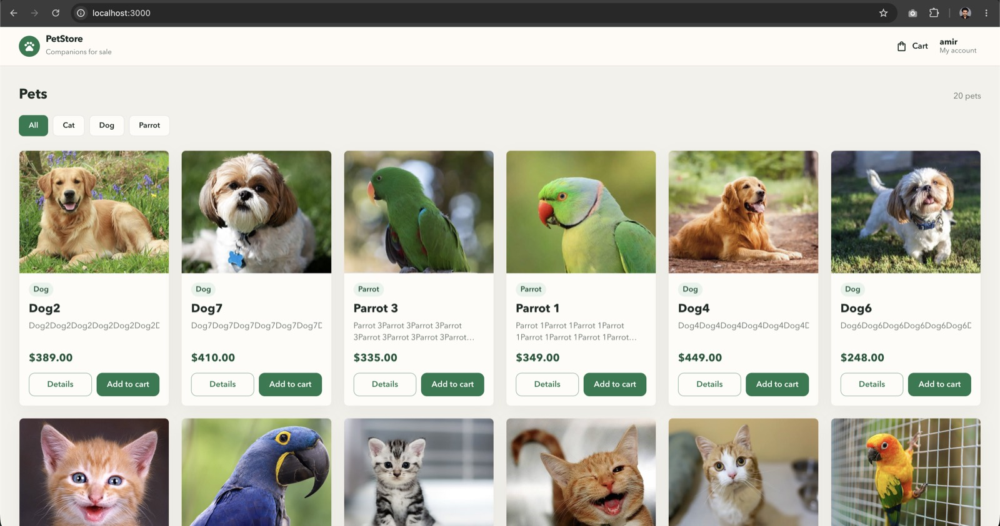
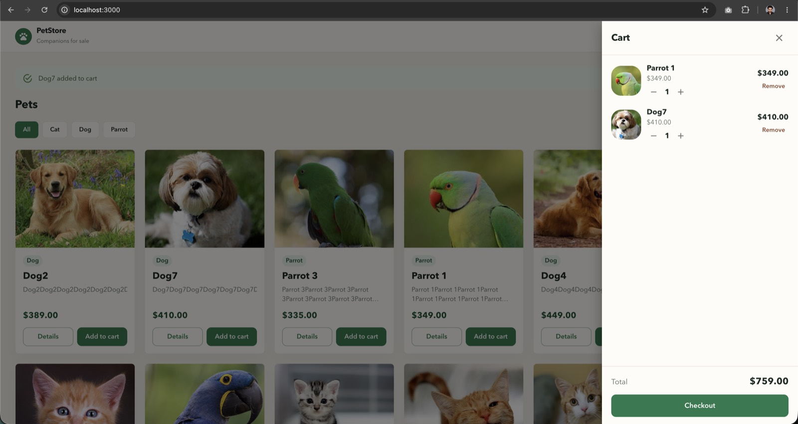
A signed-in customer opens My account and sees only their own orders. The page is a data grid with search, column controls, and paging. Columns are Order, Items, Total, Status, and Placed. Customers cannot delete an order from this page. Delete stays on the admin orders screen.
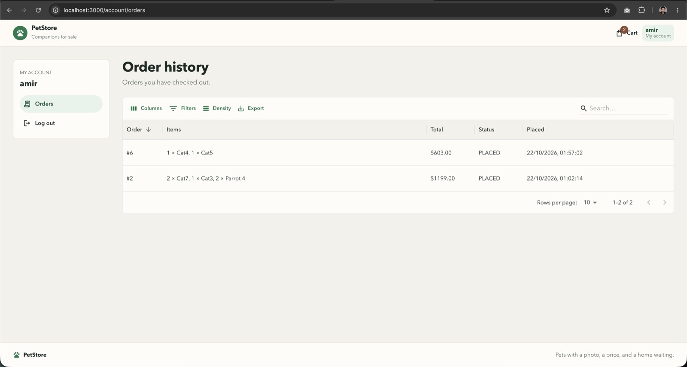
Administration lives at /admin and uses its own session. The navigation is Categories, Pets, and Orders. The signed-in administrator in these screenshots is admin. View store returns to the public shop without clearing the admin session.
Categories are created here before they can be chosen on a pet. The screenshot shows Cat, Dog, and Parrot, which are the same chips on the storefront. Each row can be deleted. The grid has search, filters, density, and export.
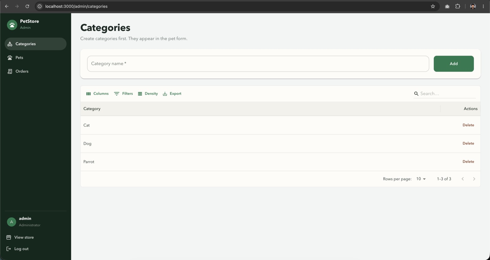
The pet list is the catalog the shop sells. Columns are Photo, Name, Category, Description, Price, and Actions. Edit and Delete are on each row. A new pet requires a photo. Uploads go to pet-container. Replacing a photo deletes the previous blob. Deleting a pet deletes its blob as well.
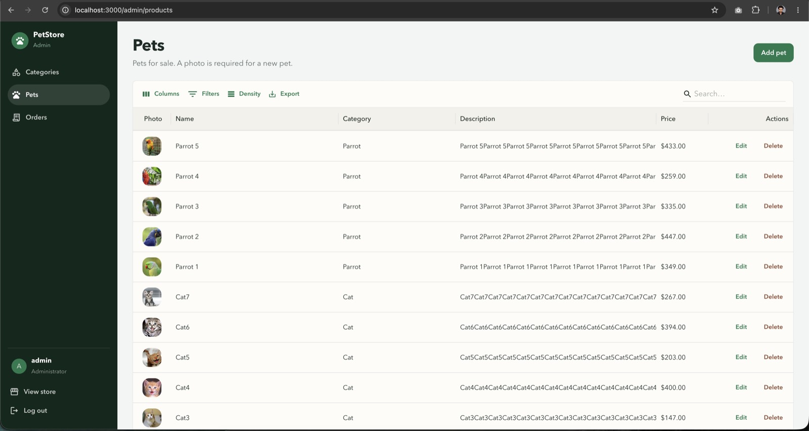
Administrators see every order, including the customer id. The same orders that appear on a customer’s account page appear here, with an extra Customer column and a Delete action. Delete is allowed only for the ADMIN role.
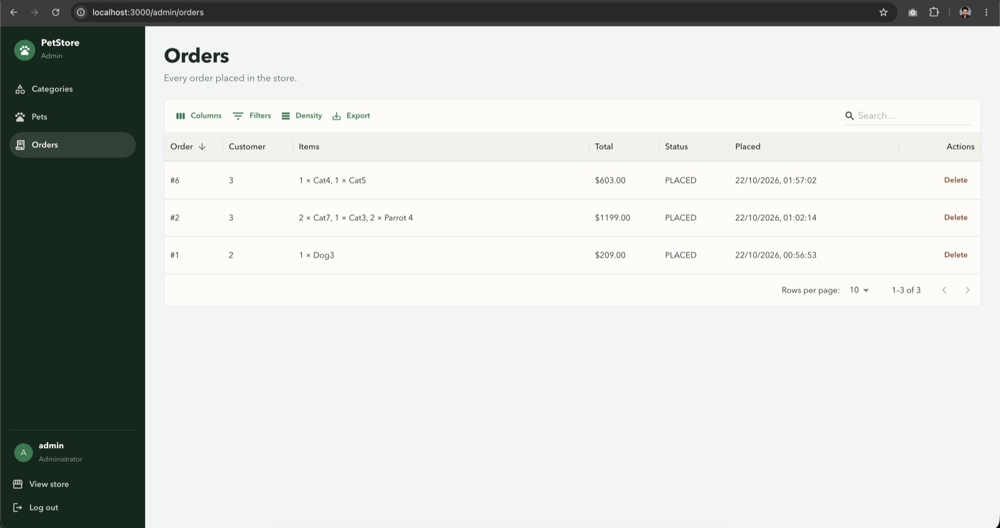
All three services use one database, petstore, on an Azure Database for PostgreSQL flexible server. The server is in the Petstore resource group and is Ready.
| Setting | Value |
|---|---|
| Server | petstore-server-name |
| Endpoint | petstore-server-name.postgres.database.azure.com |
| Subscription | Petstore subscription · b5c67bf9-6f36-431b-82ea-a27d96f61190 |
| Resource group | Petstore-Resource-Group |
| Location | Central India |
| PostgreSQL | 16 |
| Compute | Burstable B2s · 2 vCores · 4 GiB RAM · 32 GiB storage |
| Administrator login | amirrahi29 |
| High availability | Not enabled. This tier is aimed at development and test. |
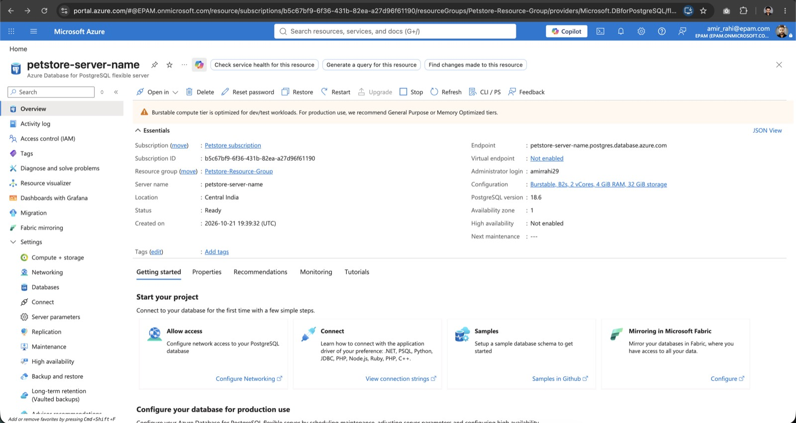
pgAdmin is connected to that server as amirrahi29. The public schema holds the application tables: categories, order_items, orders, pets, products, roles, and users. The products query in the screenshot returns the same catalog the storefront shows, twenty rows, with category and description filled in.
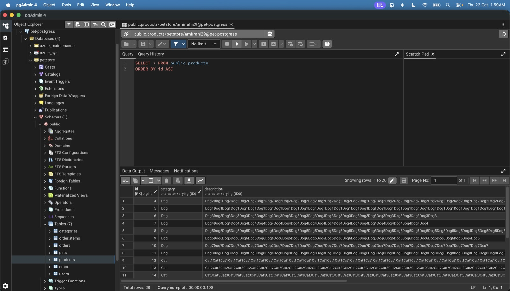
Pet photographs are files in the storage account petstore. The application container is pet-container. A second container, $logs, is the storage log container and is not used by the shop.
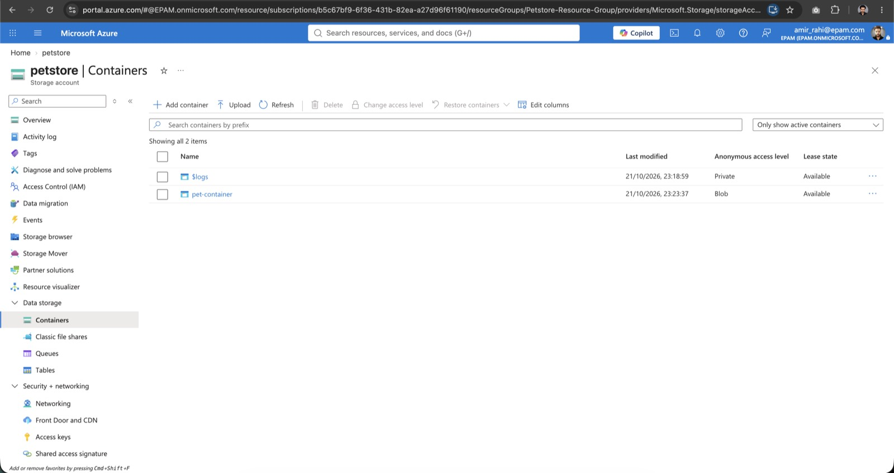
Each upload is stored under a generated file name. The database keeps the blob URL. When the API returns a pet, it adds a short-lived shared access signature so the page can show the image. The expiry configured for that link is 60 minutes. The storage connection string and account key come from the Key Vault secrets connection-string and account-key. The account name, blob endpoint, container name, and SAS lifetime stay in configuration because they are not secret values.
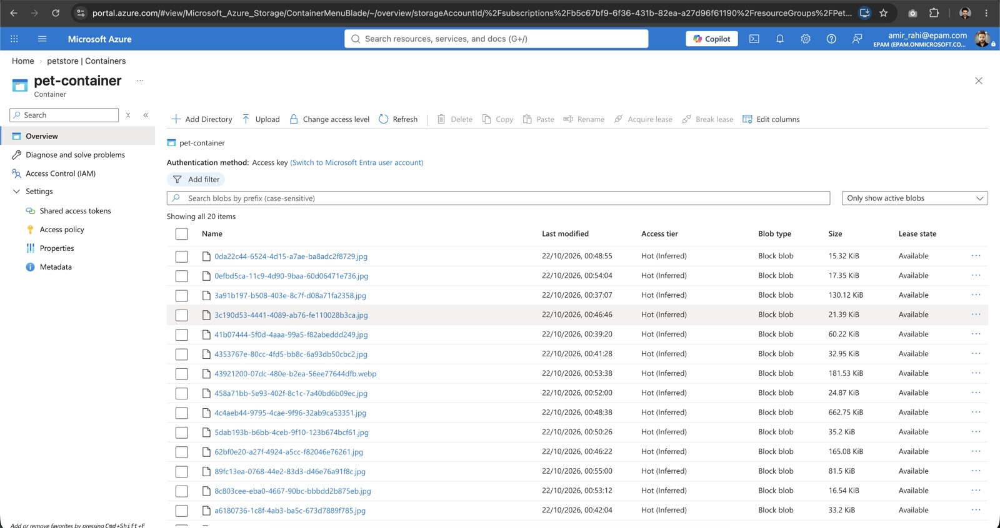
One vault holds the values the services used to keep in YAML. It is db-credentials-petstore, in Petstore-Resource-Group, location India South Central, on the Petstore subscription.
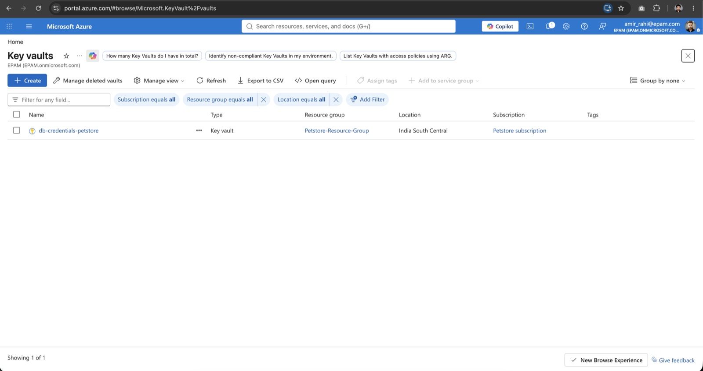
Four secrets are enabled. None of the secret values are stored in the repository.
| Secret | Used as | Services |
|---|---|---|
| username | Database username | product, order, pet |
| password | Database password | product, order, pet |
| connection-string | Blob Storage connection string | product |
| account-key | Blob Storage account key | product |
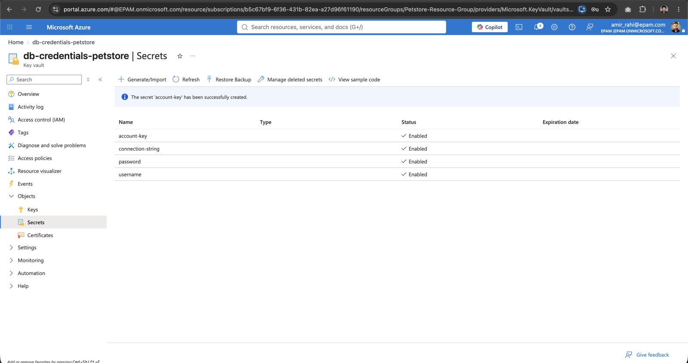
The vault URL is the only Key Vault setting in configuration: https://db-credentials-petstore.vault.azure.net/. At startup each service signs in with DefaultAzureCredential and copies the secret values into the Spring environment before the database connection is opened. On a developer machine that credential is an Azure CLI login for an account that has Get permission on secrets. No client secret is written into the YAML.
Each application already has a Dockerfile. A push to the main branch of amirrahi29/Petstore-Microservice-App-SpringBoot-React builds all four images and stores them in Azure Container Registry. The registry login server is petstoreazurecontainerregistry.azurecr.io.
| Setting | Value |
|---|---|
| Registry | petstoreazurecontainerregistry |
| Login server | petstoreazurecontainerregistry.azurecr.io |
| Resource group | Petstore-Resource-Group |
| Subscription | Petstore subscription · b5c67bf9-6f36-431b-82ea-a27d96f61190 |
| Location | India South Central |
| SKU | Basic. Provisioning succeeded on 22 October 2026. |
| Sign-in from GitHub | OpenID Connect. The workflow does not store a registry password. |
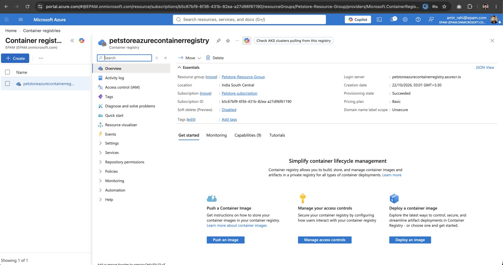
The repository name is the service name with -image on the end. Each repository has two tags: latest, and the git commit that built it.
| Application | Image | Port inside the image |
|---|---|---|
| product-service | product-service-image | 8081 |
| order-service | order-service-image | 8083 |
| pet-service | pet-service-image | 8082 |
| petstore-ui | petstore-ui-image | 80 |
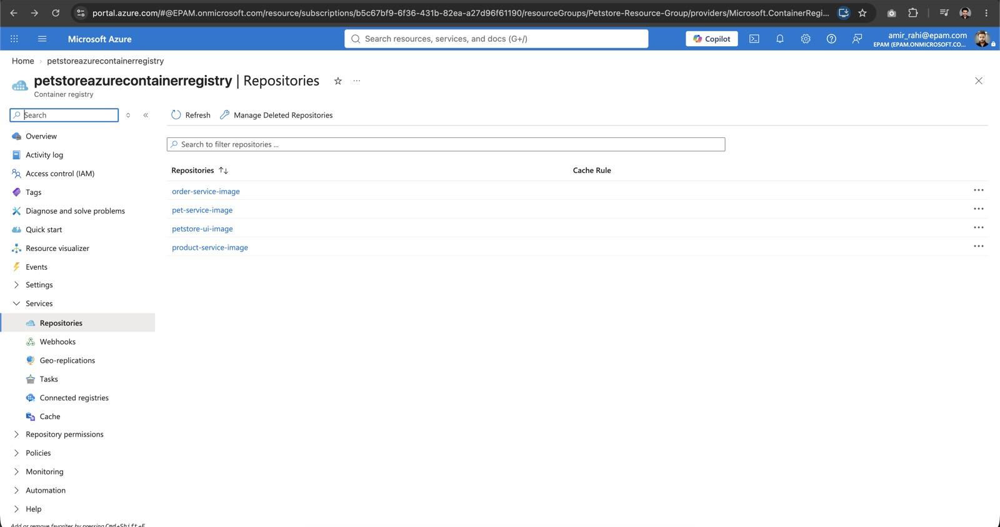
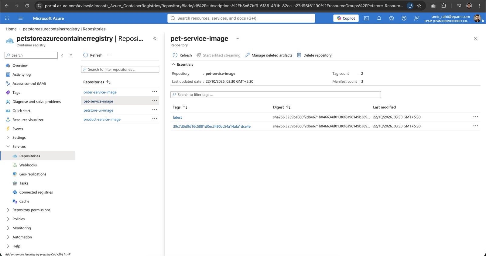
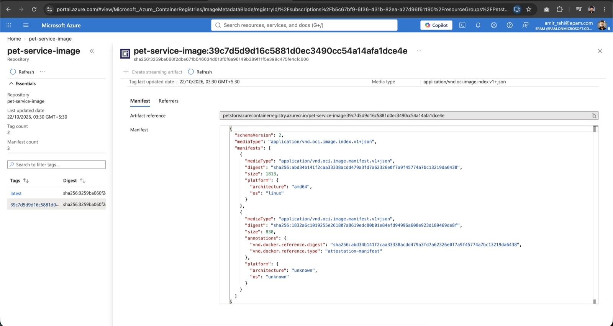
The four applications are deployed. App Service runs them as Linux web apps in Petstore-Resource-Group, on one plan, ASP-PetstoreResourceGroup-9881, in Central India. The plan is Basic, size B3, with one instance. Nothing is copied up as a jar or a zip. The publishing model is Container, so each app pulls its image from petstoreazurecontainerregistry.azurecr.io, the registry in section 9.
Deployed, in this report, means three things that the screenshots show together. The app list says Running. Each overview says runtime status Healthy, with the container image coming from that registry. A browser opened on the public hostname renders the shop. Figure 22 is that last check for the UI: the catalog, with photos and prices, is the deployed petstore-ui-image, not a local dev server.
| Web app | What it serves | Port | Default hostname |
|---|---|---|---|
| product-service-web-app | Catalog, categories, pet photos | 8081 | product-service-web-app-g7bhexgnaje3brbw.centralindia-01.azurewebsites.net |
| order-service-wep-app | Register, login, checkout, orders | 8083 | order-service-wep-app-huhhatejg5adc0cr.centralindia-01.azurewebsites.net |
| pet-service-web-app | Pet API on the same database | 8082 | pet-service-web-app-adgkgbhmfchtfge0.centralindia-01.azurewebsites.net |
| petstoreui-web-app | Storefront and the admin UI | 80 | petstoreui-web-app-e3cahqc4bad5dthh.centralindia-01.azurewebsites.net |
The order app keeps the name order-service-wep-app that was used when it was created. That spelling is the resource name and the start of its hostname. Each public URL is HTTPS on the default domain above.
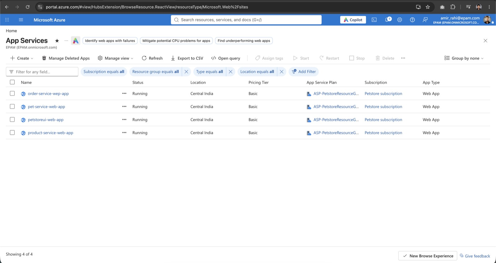
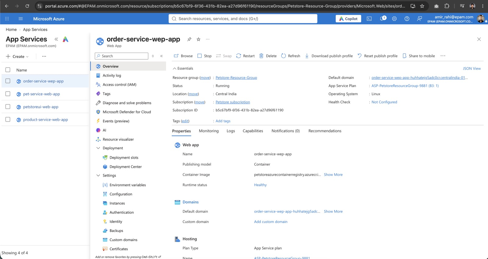
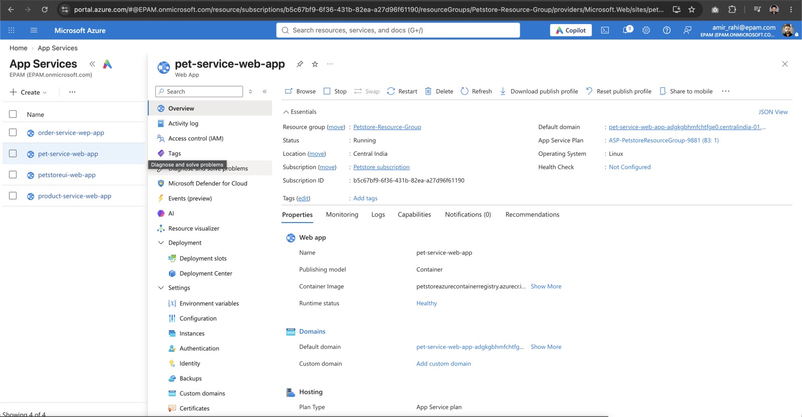
Deployment Center is where the pull is recorded. On product-service-web-app the main container is named product-service. Source is Azure Container Registry, image product-service-image, tag 5a99f3e102c5612cccff9ac7330e5eb319ffe8db, port 8081. Continuous deployment for that main container is turned on, so App Service pulls this image from the registry when the app runs. The order, pet, and UI apps are wired the same way: one main container, image from this registry, port 8083, 8082, or 80.
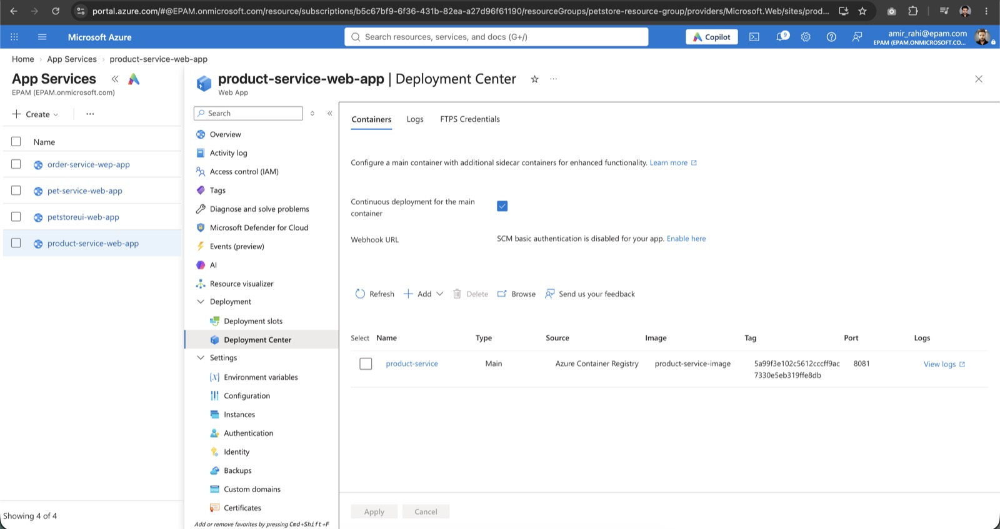
Figure 22 is the deployed shop, opened in a browser. The address bar is the App Service hostname, so this page is petstoreui-web-app after it pulled petstore-ui-image. The catalog matches section 3: no login wall, category chips, prices, photos, Details, and Add to cart, with 20 pets. Figure 23 is the same deployment at /admin/products. The signed-in administrator is admin, and the grid has photo, category, price, edit, and delete. Together these two figures show that the container App Service pulled is the application, and that it is serving traffic.
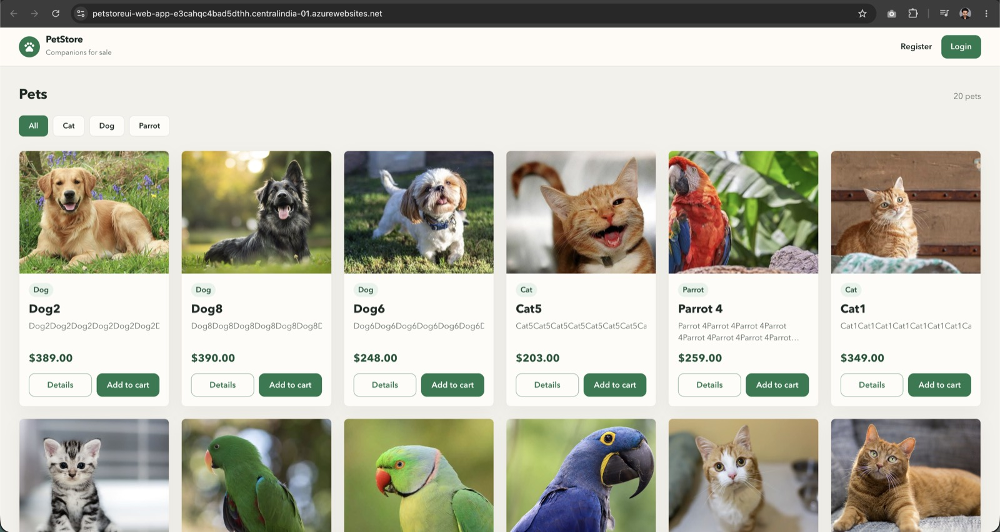
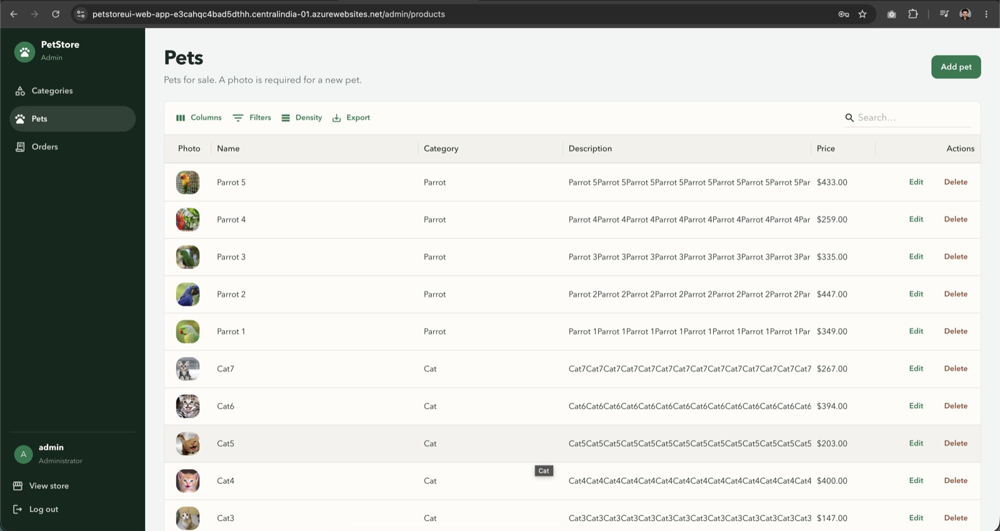
The UI image is built with the product and order hostnames in the table, so the browser on this shop calls those App Service URLs. The three Java apps still read db-credentials-petstore before they open PostgreSQL. On App Service that read uses the app’s managed identity. A Healthy runtime status means the container finished that startup and is serving its port.
Traffic Manager answers DNS for a profile name such as ui-traffic-manager.trafficmanager.net. The client then connects to the address it was given. The profile chooses an endpoint whose health probe is passing. These four profiles use Priority routing. Each profile holds one External endpoint, aimed at one of the deployed web apps in section 10.
Monitor status Online means that deployed app answered. The probe calls the App Service hostname over HTTPS, and Online is the result when the container App Service pulled from ACR is up. It is the same fact as Figure 22, read from the routing side: the UI endpoint is Online because petstoreui-web-app is deployed and serving. The product, order, and pet endpoints are Online for the same reason on their own apps.
| Profile | DNS name | Endpoint | Web app |
|---|---|---|---|
| ui-traffic-manager | ui-traffic-manager.trafficmanager.net | ui-service | petstoreui-web-app |
| product-traffic-manager | product-traffic-manager.trafficmanager.net | product-service | product-service-web-app |
| petstore-traffic-manager | petstore-traffic-manager.trafficmanager.net | order-service | order-service-wep-app |
| pet-traffic-manager | pet-traffic-manager.trafficmanager.net | pet-service | pet-service-web-app |
All four profiles sit in Petstore-Resource-Group, on the Petstore subscription, with status Enabled and routing method Priority. The endpoint type is External. Each one targets the default hostname of the deployed app, the hostname App Service published after the ACR pull. Each endpoint is Enabled, and Monitor status is Online. The probe is HTTPS on port 443, path /. A success response from that deployed app is what the portal marks Online. A failed probe stops that endpoint from being offered.
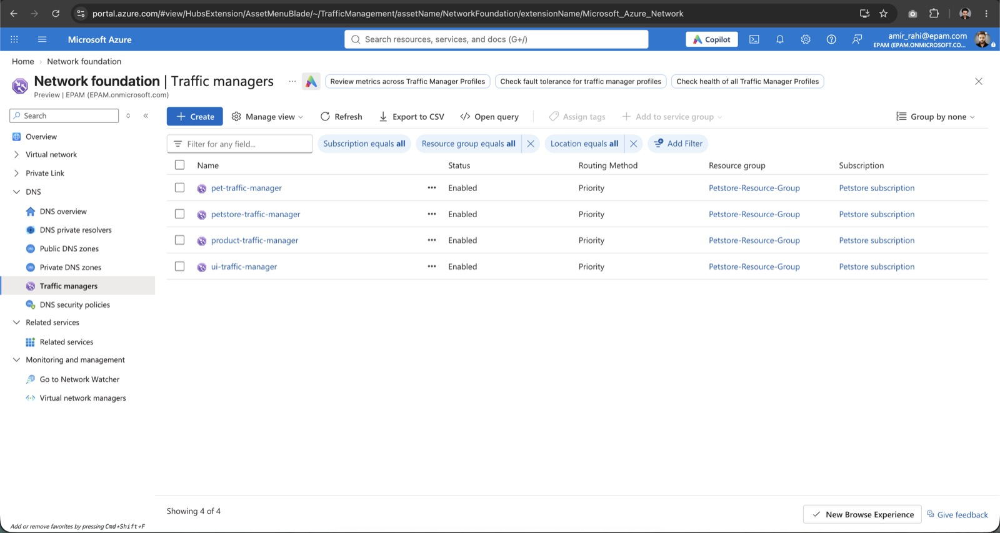
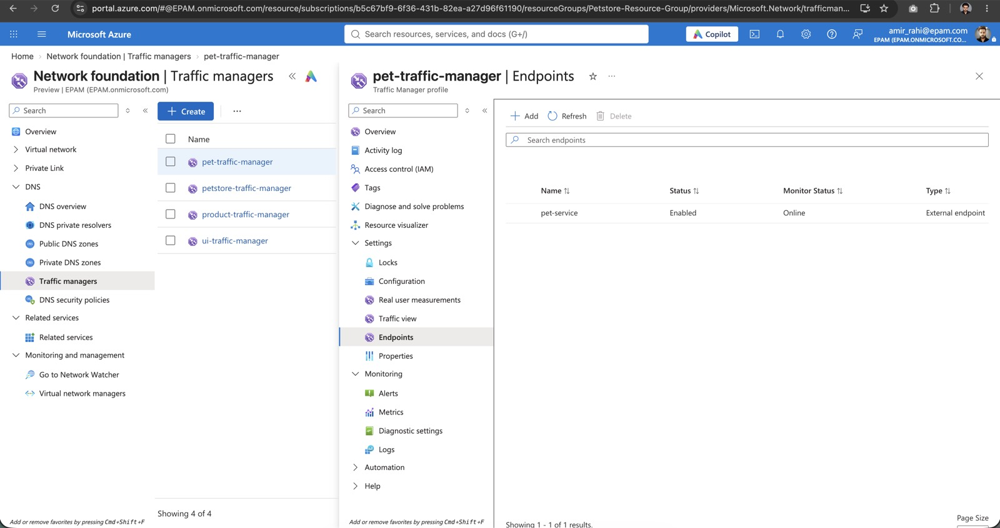
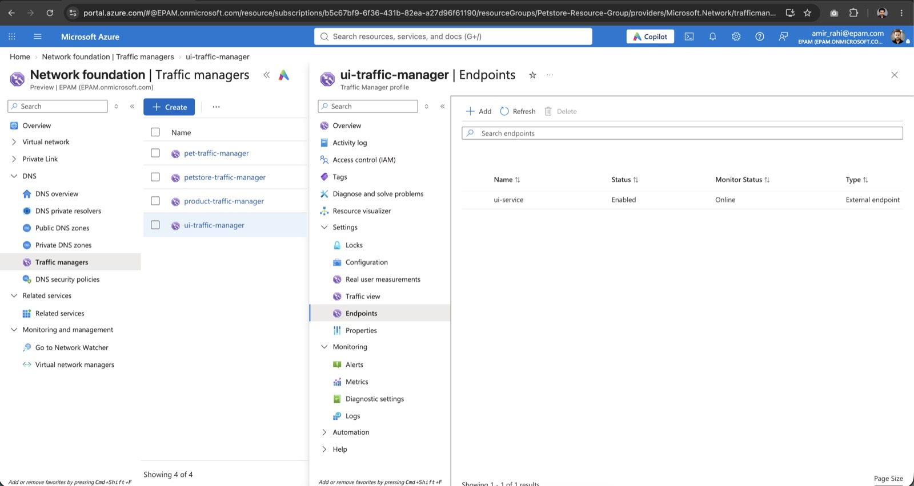
Priority with a single Online endpoint sends every DNS answer for that profile to that app. A second endpoint, at a worse priority, would be used only after this one stopped passing the probe. These profiles do not have a second endpoint, and every app is in Central India, so the screenshots show a healthy route rather than a failover between regions.
The shop in Figure 22 and Figure 23 is opened on the App Service hostname. From there the page calls the product and order hostnames in section 10. Traffic Manager’s record of this setup is the health of each endpoint, and DNS lookups of the trafficmanager.net names. The apps themselves answer on the default domains listed above. Those domains are what the probes check.